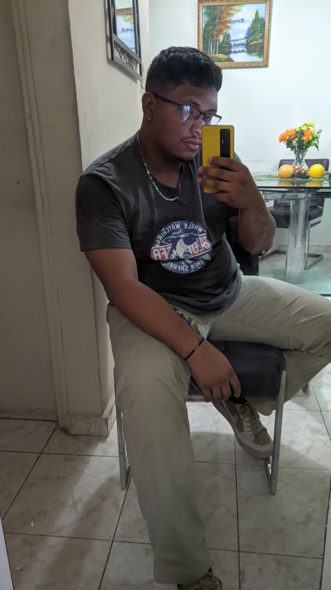

Jose Delgado

Datos Generales
Nombre Completo: Jose Eduardo Delgado Pimentel
Ocupación: Estudiante en Licenciatura en Desarrollo de Software
Teléfono: +507 6407-3045
Conocimientos
• SQL Server
• MySQL
• PSelnt
• Adobe Creative
• J Creator
Formación
Bachiller en Ciencias y Letras
Colegio Elena Chavez de Pinate
Licenciatura en Desarrollo de Software (Cursando)
Universidad Tecnológica de Panamá
Habilidades
• Trabajo en Equipo
• Proactivo
• Ver las cosas de mi punto de vista
• Organización
• Persuasivo
• Independiente
Idiomas
• Español
• Inglés (Basico)